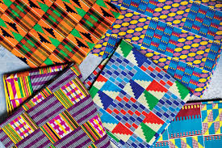

According to the elders, the designer of this cloth,
attempted to weave a unique cloth to please the Asantehene.
In his effort he used all the motifs then known to weavers in weaving one cloth.
OBAAKOFO MMU MAN
Literally means “one person does not rule a nation.”
It expresses the Akan system of governance based on participatory democracy.
SIKA FUTORO
Literally means “gold dust.”
Before the use of coins and paper as money, gold dust, was used as a medium of exchange among the Akan peoples and was therefore considered
ABUSUA YE DOM
Literally means “the extended family is a force.”
Among the Akan peoples, the extended family is the foundation of society.
EMAA DA
Literally means “it has not happened before” or “it has no precedence.”
According to Nana Kwasi Afranie of Bonwire, the Asantehene’s chief

TOKU KRA TOMA
Literally means Toku’s soul cloth.
The cloth is designed and named to commemorate the soul of a warrior Queenmother of that name, who, though was defeated and executed